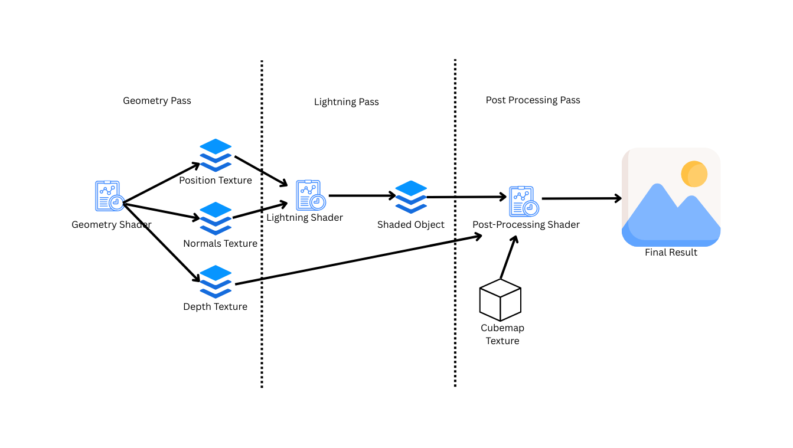

CENG 469 HW2 Blog
Project Overview
In this homework I implemented a deferred renderer in OpenGL that features an HDR cubemap and an object. I started by designing the deferred renderer. I used different framebuffers with various textures. I also needed to create lots of uniform variables and carry data between shaders using the textures. Writing and debugging these shaders was a bit challenging. But in the end, I learnt a lot about how shaders work and pass data. Overall rendering pipeline can be summarized as follows: Let's go through the passes one by one:
Geometry Pass
In the first pass, we write the normals and positions of the object into respective textures of the framebuffer. One thing to pay attention is the types of the textures. For normal and position textures, using GL_RGB32F datatype works better than RGB since it has higher precision and, for depth texture we should use specific GL_DEPTH_COMPONENT24 data type and GL_DEPTH_ATTACHMENT texture type.Lighting Pass
In the second pass, I use the normal and position textures to calculate the lighting of the scene. In the shader of this pass, I write the lighting results to a different framebuffer. I also use exposure/intensity as a uniform variable to control the brightness.Post Processing Pass
This is where we combine everything together. For combiining the objects and the cubemap, I use the depth texture from the geometry pass. If a point has the maximum depth, we render the cubemap with tonemapping and gamma correction. Otherwise, we directly render the object by sampling from the texture of the lighting pass framebuffer.Keyboard Controls
In this homework, we also show what the scene looks like in different stages of the pipeline. I keep track of the key presses in the main program. The rendering changes happens in the shaders. So I used uniforms to control shader behavior. This works for most rendering modes but I had some side-effects for rendering the positions and normals. Even though this was a simple change, rendered normals was also getting affected by the light intensity. I suppose this is caused by the gpu executing every program branch and selecting the correct one after every branch is executed. After spending several hours trying to fix it, I decided to use another way to implement this feature. In the main loop, when the program only renders the normals or positions, we switch to a different shader that renders the normals and positions directly to the screen. This worked correctly, it also avoids doing extra passes when we are rendering the normals or positions.Animations and Camera Controls
I implemented camera rotations and the model animations using quarternions, The implementations was simple.Final Notes
Doing this homework was both challenging and fun. I spent most of the time on finding and fixing the bugs. But in the end, I feel more confident working with OpenGL, since I was able to write a program that implements a modified rendering technique.Here are some screenshots of the program: